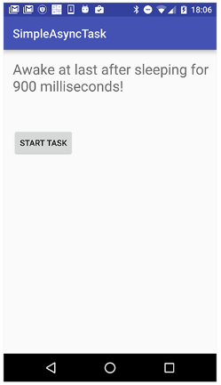
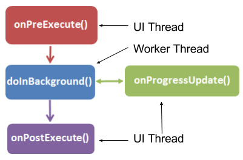
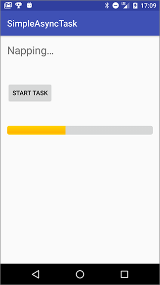

この実践的なコードラボはユニット 3: Android Developer Fundamentals (Version 2) コースのバックグラウンドでの作業の一部です。コードラボを順番に進めていくことで、このコースを最大限に活用することができます。
注：このコースでは、"codelab"と"practical"という用語を入れ替えて使用しています。
序章
スレッドとは、実行中のプログラムにおける独立した実行パスのことです。Android プログラムが起動されると、システムはメイン スレッドを作成し、UI スレッドとも呼ばれます。この UI スレッドは、アプリが Android UI ツールキットのコンポーネントとどのように相互作用するかを示します。
アプリがファイルのダウンロード、データベースクエリの作成、メディアの再生、複雑な分析の計算などのリソース集約的なタスクを実行する必要がある場合があります。このような集中的な作業を行うと、UI スレッドがブロックされ、アプリがユーザーの入力に反応しなくなったり、画面に描画されなくなったりすることがあります。ユーザーはイライラしてアプリをアンインストールしてしまう可能性があります。
ユーザーエクスペリエンス（UX）をスムーズに保つために、Android フレームワークでは、UI スレッドの外で作業を処理するAsyncTask と呼ばれるヘルパークラスを提供しています。AsyncTask を使用して集中的な処理を別のスレッドに移すことで、UI スレッドの応答性を維持することができます。
別のスレッドは呼び出し側のスレッドと同期していないため、非同期スレッドと呼ばれます。AsyncTaskにはコールバックも含まれており、計算結果をUIスレッドに表示することができます。
この実践編では、AsyncTaskを使ってAndroidアプリにバックグラウンドタスクを追加する方法を学びます。
すでに知っておくべきこと
できるようになるはずです。
Button ビューとその onClick 機能を使用します。あなたが学ぶこと
AsyncTaskを追加する方法。AsyncTaskを使うことの欠点。あなたがすること
AsyncTaskを使ってバックグラウンドタスクを実行するシンプルなアプリを作成します。TextViewメッセージの状態を保持するためのアクティビティインスタンスの状態を実装します。1つのTextViewと1つのButtonを持つアプリを作成します。ユーザーがボタンをクリックすると、アプリはランダムな時間だけスリープ状態になり、スリープが解除されるとTextViewにメッセージが表示されます。完成したアプリは以下のようになります。

SimpleAsyncTask UI には、AsyncTask を起動する Button と、アプリのステータスを表示する TextView があります。
1.1 プロジェクトとレイアウトを作成する
activity_main.xmlレイアウトファイルを開きます。テキスト］タブをクリックします。トップレベル ConstraintLayout に layout_margin 属性を追加します。android:layout_margin="16dp"
属性 | 値 |
アンドロイド |
|
アンドロイド |
|
アンドロイド |
|
app:layout_constraintRight_toRightOf属性とapp:layout_constraintTop_toTopOf属性を削除します。TextViewのすぐ下にButton要素を追加し、これらの属性を与えます。ボタンのテキストを文字列リソースに抽出します。属性 | 値 |
アンドロイド |
|
アンドロイド |
|
アンドロイド |
|
アンドロイド |
|
|
|
アンドロイド |
|
|
|
|
|
onClick 属性は黄色でハイライトされますが、これは MainActivity に startTask() メソッドがまだ実装されていないためです。ハイライトされたテキストにカーソルを置き、Alt + Enter（Macの場合はOption + Enter）を押し、「MainActivity」で「Create 'startTask(View) in 'MainActivity'」を選択して、MainActivityにメソッドのスタブを作成します。activity_main.xmlのソリューションコードです。
<?xml version="1.0" encoding="utf-8"?>
<android.support.constraint.ConstraintLayout
xmlns:android="http://schemas.android.com/apk/res/android"
xmlns:app="http://schemas.android.com/apk/res-auto"
xmlns:tools="http://schemas.android.com/tools"
android:layout_width="match_parent"
android:layout_height="match_parent"
android:layout_margin="16dp"
tools:context=".MainActivity">
<TextView
android:id="@+id/textView1"
android:layout_width="wrap_content"
android:layout_height="wrap_content"
android:text="@string/ready_to_start"
android:textSize="24sp"
app:layout_constraintStart_toStartOf="parent"
app:layout_constraintTop_toTopOf="parent"/>
<Button
android:id="@+id/button"
android:layout_width="wrap_content"
android:layout_height="wrap_content"
android:layout_marginTop="24dp"
android:onClick="startTask"
android:text="@string/start_task"
app:layout_constraintStart_toStartOf="parent"
app:layout_constraintTop_toBottomOf="@+id/textView1"/>
</android.support.constraint.ConstraintLayout>AsyncTaskは抽象クラスなので、使用するにはサブクラス化しなければなりません。この例では、AsyncTask は非常にシンプルなバックグラウンド タスクを実行します。実際のアプリでは、バックグラウンド タスクは、データベースの照会、インターネットへの接続、現在の囲碁チャンピオンに勝つための次の囲碁の手の計算など、あらゆる種類の作業を実行します。
AsyncTask サブクラスには、メインスレッドからの作業を実行するための以下のメソッドがあります。
onPreExecute()を使用します。このメソッドは UI スレッド上で実行され、タスクを設定するために使用されます (プログレスバーの表示など)。doInBackground()を使用します。ここでは、別スレッドで実行する作業を実行するコードを実装します。onProgressUpdate()。これは UI スレッドで呼び出され、UI の進捗状況を更新するために使用されます (進捗バーを埋めるなど)onPostExecute()。これもUIスレッド上で、AsyncTaskの読み込みが終了した後に結果をUIに更新するために使用されます。
注意: バックグラウンドスレッドやワーカースレッドとは、メインスレッドやUIスレッドではないスレッドのことです。
AsyncTask サブクラスを作成する際には、それが実行する作業についての情報、進捗状況を報告するかどうか、どのように報告するか、結果をどのような形式で返すかなどの情報を与えなければならない場合があります。AsyncTaskサブクラスを作成する際には、これらのパラメータを使用して設定することができます。
doInBackground() オーバーライドメソッドの実行時にタスクに送信されるパラメータのデータ型。onProgressUpdated() オーバーライド・メソッドを使用して公開された進捗単位のデータ型。onPostExecute() オーバーライド・メソッドによって配信される結果のデータ型。例えば、以下のクラス宣言を持つ MyAsyncTask という AsyncTask サブクラスは、以下のパラメータを取るかもしれません。
doInBackground() のパラメータとしての文字列。onProgressUpdate() の整数で、ジョブの完了率を表します。onPostExecute()の結果を表すビットマップ。public class MyAsyncTask
extends AsyncTask <String, Integer, Bitmap>{}
このタスクでは、UIスレッドとは異なるスレッドで実行される作業を定義するために、AsyncTaskサブクラスを使用します。
2.1 AsyncTask のサブクラス
このアプリでは、作成した AsyncTask サブクラスは、クエリ パラメータを必要とせず、進捗状況を公開しません。doInBackground() メソッドと onPostExecute() メソッドのみを使用します。
AsyncTaskを拡張し、3つの一般的な型のパラメータを取るSimpleAsyncTaskという新しいJavaクラスを作成します。この AsyncTask は入力を必要としないので、パラメータは Void を使用します。進捗状況は公開されないので、進捗タイプに Void を使用します。AsyncTask の実行が完了したときに文字列で TextView を更新するため、結果の型には String を使用します。
public class SimpleAsyncTask extends AsyncTask <Void, Void, String>{}注意: 必要なメソッド doInBackground()
がまだ実装されていないため、クラス宣言には赤で下線が引かれています。
クラスの先頭で、WeakReference型のメンバ変数mTextViewを定義します。 private WeakReference<TextView> mTextView;AsyncTask用のコンストラクタを実装し、TextViewをパラメータとして受け取り、そのTextViewの新しい弱い参照を作成します。SimpleAsyncTask(TextView tv) {
mTextView = new WeakReference<>(tv);
}AsyncTaskは、アクティビティのスリープが完了したら（onPostExecute()メソッドで）、アクティビティ内のTextViewを更新する必要があります。そのため、クラスのコンストラクタは更新されるTextViewへの参照を必要とします。
弱い参照（WeakReferenceクラス）は何のためにあるのでしょうか？AsyncTaskのコンストラクタにTextViewを渡し、それをメンバ変数に格納すると、TextViewへの参照はアクティビティがガベージコレクションされないことを意味し、デバイスの設定変更のようにアクティビティが破棄されて再作成された場合でも、メモリがリークされます。これをリーキーコンテキストの作成と呼び、試してみるとAndroid Studioが警告してくれます。
弱い参照は、必要に応じてその参照が保持するオブジェクトをガベージコレクションできるようにすることで、メモリリークを防ぎます。
2.2 doInBackground() の実装
doInBackground() メソッドは AsyncTask サブクラスに必要です。
doInBackground() を選択し、OK をクリックします。以下のメソッドテンプレートがクラスに追加されます。@Override
protected String doInBackground(Void... voids) {
return null;
}Random r = new Random();
int n = r.nextInt(11);
int s = n * 200;/キャッチブロックを追加して、スレッドをスリープ状態にします。try {
Thread.sleep(s);
} catch (InterruptedException e) {
e.printStackTrace();
}return文を置き換えて、"Awake at last after sleeping for xx milliseconds"という文字列を返すようにします。return "Awake at last after sleeping for " + s + " milliseconds!";完全な doInBackground() メソッドは次のようになります。
@Override
protected String doInBackground(Void... voids) {
// Generate a random number between 0 and 10
Random r = new Random();
int n = r.nextInt(11);
// Make the task take long enough that we have
// time to rotate the phone while it is running
int s = n * 200;
// Sleep for the random amount of time
try {
Thread.sleep(s);
} catch (InterruptedException e) {
e.printStackTrace();
}
// Return a String result
return "Awake at last after sleeping for " + s + " milliseconds!";
}2.3 onPostExecute()の実装
doInBackground() メソッドが完了すると、戻り値は自動的に onPostExecute() コールバックに渡されます。
onPostExecute()を実装し、Stringの引数を取り、その文字列をTextViewに表示します。protected void onPostExecute(String result) {
mTextView.get().setText(result);
}このメソッドの String パラメータは、AsyncTask クラス定義の 3 番目のパラメータで定義したもので、doInBackground() メソッドが返すものです。
mTextViewは弱い参照なので、その下にあるTextViewオブジェクトを取得するためにはget()メソッドで参照し、その上でsetText()を呼び出す必要があります。
注意: onPostExecute()でUIを更新することができるのは、このメソッドがメインスレッドで実行されるからです。doInBackground() メソッドで新しい文字列で TextView
を更新することはできません。
3.1 AsyncTaskを起動するメソッドを実装する
アプリには、バックグラウンドで作業を実行する AsyncTask クラスが用意されています（シミュレートされた作業として sleep() を呼び出さなければ、そうなります）。これで、バックグラウンド タスクをトリガーするための「タスク開始」ボタンの onClick メソッドを実装できるようになりました。
MainActivity.javaファイルで、TextViewを格納するためのメンバ変数を追加します。private TextView mTextView;onCreate()メソッドで、mTextViewをレイアウト内のTextViewに初期化します。mTextView = findViewById(R.id.textView1);startTask()メソッドで、"Napping..."というテキストを表示するようにTextViewを更新します。そのメッセージを文字列リソースに抽出します。mTextView.setText(R.string.napping);SimpleAsyncTask のインスタンスを作成し、TextView mTextView をコンストラクタに渡します。その SimpleAsyncTask インスタンスで execute() を呼び出します。new SimpleAsyncTask(mTextView).execute();注意: execute() メソッドでは、カンマで区切られたパラメータを渡し、システムから doInBackground() に渡されます。この AsyncTask
にはパラメータがないので、空欄のままにしておきます。
MainActivityのソリューションコードです。
package com.example.android.simpleasynctask;
import android.support.v7.app.AppCompatActivity;
import android.os.Bundle;
import android.view.View;
import android.widget.TextView;
/**
* The SimpleAsyncTask app contains a button that launches an AsyncTask
* which sleeps in the asynchronous thread for a random amount of time.
*/
public class MainActivity extends AppCompatActivity {
// The TextView where we will show results
private TextView mTextView;
@Override
protected void onCreate(Bundle savedInstanceState) {
super.onCreate(savedInstanceState);
setContentView(R.layout.activity_main);
mTextView = findViewById(R.id.textView1);
}
public void startTask(View view) {
// Put a message in the text view
mTextView.setText(R.string.napping);
// Start the AsyncTask.
new SimpleAsyncTask(mTextView).execute();
}
}3.2 onSaveInstanceState**()**の実装
注意: デバイスを回転させると、TextView
は初期の内容にリセットされ、AsyncTask
は
TextViewを更新できないようです。
ここではいくつかのことが起こっています。
onDestroy()を呼び出してからonCreate()を呼び出してアプリを再起動します。AsyncTaskはアクティビティが破棄されても実行を続けますが、アクティビティのUIにレポートを返す機能を失います。その特定のTextViewも破壊されているため、渡されたTextViewを更新することはできません。AsyncTaskはバックグラウンドで完了まで実行を続け、システムリソースを消費します。最終的にシステムはリソースを使い果たし、AsyncTaskは失敗します。AsyncTaskがなくても、デバイスの回転はすべてのUI要素をデフォルトの状態にリセットします。これらの理由から、AsyncTaskはアクティビティの破棄によって中断される可能性のあるタスクにはあまり適していません。これが非常に重要な場合には、AsyncTaskLoader と呼ばれる別のタイプのバックグラウンドクラスを使用することができます。
テキストビューが初期の文字列にリセットされないようにするには、その状態を保存する必要があります。デバイスの回転などの設定変更に応じてアクティビティが破棄された場合に、TextViewの内容を保持するために、onSaveInstanceState()を実装します。
注: AsyncTaskのすべての用途で、回転時のビューの状態を処理する必要があるわけではありません。このアプリは結果を表示するためにTextView
を使用しているので、状態を保持しておくと便利です。ファイルをアップロードするなどの他のケースでは、UI内に永続的な情報を必要としない場合があるため、状態を保持することは重要ではありません。
private static final String TEXT_STATE = "currentText";onSaveInstanceState()メソッドをオーバーライドして、アクティビティが破棄されたときにTextView内のテキストを保持します。@Override
protected void onSaveInstanceState(Bundle outState) {
super.onSaveInstanceState(outState);
// Save the state of the TextView
outState.putString(TEXT_STATE,
mTextView.getText().toString());
}
}onCreate()では、アクティビティが復元されたときに状態バンドルからTextViewの値を取得します。// Restore TextView if there is a savedInstanceState
if(savedInstanceState!=null){
mTextView.setText(savedInstanceState.getString(TEXT_STATE));MainActivityのソリューションコードです。
package android.example.com.simpleasynctask;
import android.os.Bundle;
import android.support.v7.app.AppCompatActivity;
import android.view.View;
import android.widget.TextView;
/**
* The SimpleAsyncTask app contains a button that launches an AsyncTask
* which sleeps in the asynchronous thread for a random amount of time.
*/
public class MainActivity extends AppCompatActivity {
//Key for saving the state of the TextView
private static final String TEXT_STATE = "currentText";
// The TextView where we will show results
private TextView mTextView = null;
/**
* Initializes the activity.
* @param savedInstanceState The current state data
*/
@Override
protected void onCreate(Bundle savedInstanceState) {
super.onCreate(savedInstanceState);
setContentView(R.layout.activity_main);
// Initialize mTextView
mTextView = (TextView) findViewById(R.id.textView1);
// Restore TextView if there is a savedInstanceState
if(savedInstanceState!=null){
mTextView.setText(savedInstanceState.getString(TEXT_STATE));
}
}
/**`
* Handles the onCLick for the "Start Task" button. Launches the AsyncTask
* which performs work off of the UI thread.
*
* @param view The view (Button) that was clicked.
*/
public void startTask (View view) {
// Put a message in the text view
mTextView.setText(R.string.napping);
// Start the AsyncTask.
// The AsyncTask has a callback that will update the text view.
new SimpleAsyncTask(mTextView).execute();
}
/**
* Saves the contents of the TextView to restore on configuration change.
* @param outState The bundle in which the state of the activity is saved
* when it is spontaneously destroyed.
*/
@Override
protected void onSaveInstanceState(Bundle outState) {
super.onSaveInstanceState(outState);
// Save the state of the TextView
outState.putString(TEXT_STATE, mTextView.getText().toString());
}
}Android Studioプロジェクト。SimpleAsyncTask
注: コーディングの課題はすべて任意であり、後のレッスンの前提条件ではありません。
課題: AsyncTask クラスには、もう 1 つの便利なオーバーライドメソッド onProgressUpdate() があり、AsyncTask の実行中に UI を更新することができます。このメソッドを使用して、現在のスリープ時間で UI を更新します。onProgressUpdate()がどのように適切に実装されているかについては、AsyncTaskのドキュメントを参照してください。AsyncTaskのクラス定義で、onProgressUpdate()メソッドで使用するデータ型を指定する必要があることを覚えておいてください。
AsyncTaskは、集約的な処理を別のスレッドに移す抽象的なJavaクラスです。AsyncTaskを使用するにはサブクラス化する必要があります。AsyncTaskには、onPreExecute()、doInBackground()、onPostExecute()、onProgressUpdate()の4つの主要なメソッドがあります。doInBackground() メソッドは、実際にワーカースレッド上で実行される唯一のメソッドです。doInBackground() メソッドで UI メソッドを呼び出してはいけません。AsyncTaskの他のメソッドはUIスレッドで実行され、UIコンポーネントのメソッドを呼び出すことができます。AsyncTaskのバックグラウンドスレッドからUIを切り離すことができます。関連する概念のドキュメントは7.1にあります。AsyncTask と AsyncTaskLoader にあります。
Androidの開発者向けドキュメント。
他のリソース。
動画です。
このセクションでは、インストラクターが主導するコースの一部として、このコードラボを通して作業する学生のための可能な宿題をリストアップします。以下のことをするかどうかはインストラクター次第です。
講師は、彼らが望むように少しまたは多くのようにこれらの提案を使用することができますし、彼らが適切であると感じる他の宿題を割り当てるために自由に感じるはずです。
もしあなた自身でこのコードラボに取り組んでいるのであれば、これらの宿題を使ってあなたの知識をテストしてみてはいかがでしょうか。
アプリを構築して実行する
SimpleAsyncTask アプリを開きます。完了したスリープ時間のパーセンテージを表示するプログレスバーを追加します。プログレスバーは、AsyncTask スレッドが 0 から 100 (パーセント) までの値でスリープすると塗りつぶされます。
ヒント：睡眠時間をチャンクに分解する。
ヘルプはAsyncTask リファレンスを参照してください。

以下の質問に答えてください。
質問1
プログレスバーの場合。
質問2
以下のようにAsyncTaskが定義されている場合。
private class DownloadFilesTask extends AsyncTask<URL, Integer, Long>でdoInBackground()に渡される値の型は？質問3
AsyncTaskで実行された作業の進捗状況を報告するために、どのようなコールバックメソッドを実装し、AsyncTaskのサブクラスでどのようなメソッドを呼び出すのでしょうか？
publishProgress()を実装します。publishProgress()を呼び出します。publishProgress()を実装します。onProgressUpdate()を呼び出す。onProgressUpdate()を実装します。publishProgress()を呼び出します。onProgressUpdate()を実装します。onProgressUpdate()を呼び出します。アプリを提出して採点を受ける
学年別ガイダンス
アプリが以下の機能を持っているかどうかを確認しましょう。
ProgressBarが含まれています。AsyncTask は、総睡眠時間をチャンクに分割し、各チャンクの後にプログレスバーを更新します。AsyncTaskは適切なメソッドを呼び出し、プログレスバーを更新するための適切なコールバックを実装します。AsyncTask は、どのビューを更新するかを知る必要があります。AsyncTask が内部クラスとして実装されているかどうかによって、ビューは AsyncTask のコンストラクタに渡されるか、アクティビティのメンバ変数として定義されます。Android Developer Fundamentals (V2)コースの次の実践的なコードラボを見つけるには、Codelabs for Android Developer Fundamentals (V2)を参照してください。
概念章、アプリ、スライドへのリンクを含むコースの概要については、Android Developer Fundamentals (Version 2)を参照してください。